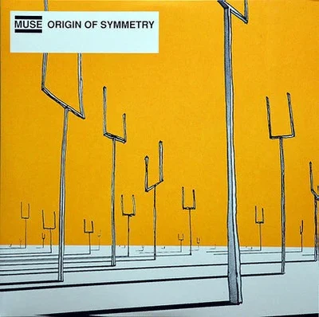

MUSE's discography consists of nine studio albums, along with several live albums and collections.
The publication of their first work, Showbiz, dates back to 1999, while the latter one, Will of the People, has been published in 2022.

In 2001 they released Origin of Symmetry, which has been a big commercial success and to these days is considered by many one of the best rock albums of that decade.
Back to the home page here